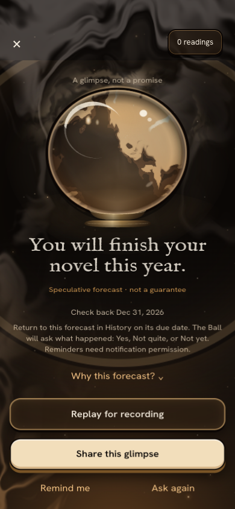
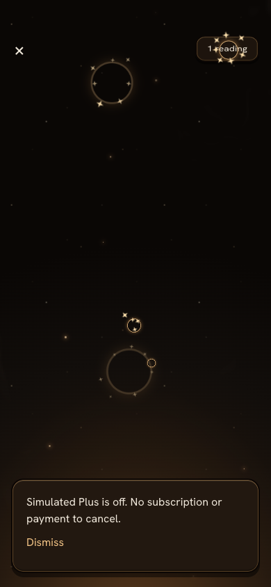

Your forecast. Then check back.
Positioning, flow and voice changes. Existing visual components reused; the separate visual redesign remains independent.
1 · A story with an ending
Onboarding and Home lead with a forecast, a due date and a return visit. Reveal explains where and when to check in.

Payoff: Yes, Not quite and Not yet use the same controls and History treatment. A miss gets a thank-you, never an accuracy score.
2 · Honest Plus
Free: 1 reading/day. Plus: 10/day, deeper Why, styles and unlimited sealed cards.
$39.99/year or $5.99/month, with renewal and app-store cancellation explained before the simulated action. No real subscription exists. Simulated Plus can be turned off.

The screen scrolls; the screenshot shows the position after testing cancellation. Full disclosure remains above the Plus action.
3 · A kind voice
Forecasts, context questions, omens and social writing share the same editorial instruction.
Specific to supplied context. Honest about uncertainty. No doom, cruelty, secret-feelings claims or certainty promises.
Read the short voice guide
English fixture checks flag editorial patterns. They do not certify semantic safety or predictive accuracy.
Three sample reveals — experiment preparation only
1080 × 1920 MP4 screen recordings, 11 seconds each. Fictional questions and answers; real local Ollama forecasts. Sample 3 forces only the cosmetic golden flag. No content was posted.
“Replay for recording” hides the raw question, answers, Why, balance and navigation. It uses the device’s recorder; the app exports only PNG. Review the headline before sharing because it can contain supplied details. Replay uses no reading.
Approved content scope
This change delivers experiment preparation only: a capture-ready reveal/share card and three sample 9:16 recordings for the captain to post himself. A consented content experiment with participants and tracking is out of scope. No experiment ran, no content was posted, and no new tracking was added. Reveal completion, voluntary export, recipient open and return were not measured with participants. These samples establish no claim about TikTok reach, retention or accuracy.
Evidence and limits
- Live design drive passed, including accessibility scans, real Spanish forecast, PNG export and export-error recovery, History, memory edit/forget, plans, safety redirect and reduced motion.
- Recovery drive passed: cancellation and real 60-second timeout spend no reading; prediction failure keeps answers. Speech-constructor behavior is explicitly mocked.
- Type checking and all 120 automated tests passed. 144 layout measurements passed at 360, 390 and 430px with normal and 200% text.
- Voice review of the three actual sample readings: zero English pattern flags; manually reviewed for supplied context and conditional explanations.
- Live journey transcript: fictional inputs, actual model replies, outcome persistence and recording checks.
- Exported 9:16 PNG: forecast, uncertainty label and check-in date.
- First driver failure: corrected assertion for the selected check-in button.
- Rejected capture: orb CSS missing without Atmosphere; fixed by reusing the existing component.
Browser evidence does not prove native notification delivery, physical-device recording, native sharing or real billing. No tarot bundles, soulmate drawings, human psychics, publishing integration or video-export feature added.